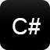

Picking a Programming Language

Technologies Descriptions: Per Wikkipedia Click to Learn a Little About Each Technology Pairing
Click Each Pairing to Learn More:
Ruby
Since its public release in 1995, Ruby has drawn devoted coders worldwide. In 2006, Ruby achieved mass acceptance. With active user groups formed in the world’s major cities and Ruby-related conferences filled to capacity. Ruby-Talk, the primary mailing list for discussion of the Ruby language, climbed to an average of 200 messages per day in 2006. It has dropped in recent years as the size of the community pushed discussion from one central list into many smaller groups. Ruby is ranked among the top 10 on most of the indices that measure the growth and popularity of programming languages worldwide (such as the TIOBE index). Much of the growth is attributed to the popularity of software written in Ruby, particularly the Ruby on Rails web framework. Ruby is also completely free. Not only free of charge, but also free to use, copy, modify, and distribute.
Ruby on Rails
Rails is a web application development framework written in the Ruby language. It is designed to make programming web applications easier by making assumptions about what every developer needs to get started. It allows you to write less code while accomplishing more than many other languages and frameworks. Experienced Rails developers also report that it makes web application development more fun. Rails is opinionated software. It makes the assumption that there is a "best" way to do things, and it's designed to encourage that way - and in some cases to discourage alternatives. If you learn "The Rails Way" you'll probably discover a tremendous increase in productivity. If you persist in bringing old habits from other languages to your Rails development, and trying to use patterns you learned elsewhere, you may have a less happy experience. The Rails philosophy includes two major guiding principles: Don't Repeat Yourself: DRY is a principle of software development which states that "Every piece of knowledge must have a single, unambiguous, authoritative representation within a system." By not writing the same information over and over again, our code is more maintainable, more extensible, and less buggy. Convention Over Configuration: Rails has opinions about the best way to do many things in a web application, and defaults to this set of conventions, rather than require that you specify every minutiae through endless configuration files.
PHP
Instead of lots of commands to output HTML (as seen in C or Perl), PHP pages contain HTML with embedded code that does "something" (in this case, output "Hi, I'm a PHP script!"). The PHP code is enclosed in special start and end processing instructions that allow you to jump into and out of "PHP mode." What distinguishes PHP from something like client-side JavaScript is that the code is executed on the server, generating HTML which is then sent to the client. The client would receive the results of running that script, but would not know what the underlying code was. You can even configure your web server to process all your HTML files with PHP, and then there's really no way that users can tell what you have up your sleeve. The best things in using PHP are that it is extremely simple for a newcomer, but offers many advanced features for a professional programmer. Don't be afraid reading the long list of PHP's features. You can jump in, in a short time, and start writing simple scripts in a few hours. Although PHP's development is focused on server-side scripting, you can do much more with it. Read on, and see more in the What can PHP do? section, or go right to the introductory tutorial if you are only interested in web programming.
DRUPAL
Drupal is written in the PHP programming language. The software is ready-to-use upon download and also includes a Web-based installer and add on modules. The software supports content management, collaborative authoring, newsletters, podcasts, image galleries, peer-to-peer networking, file uploads/downloads and more. Drupal originated as a bulletin board system developed by Dries Buytaert in the Netherlands, and became an Open Source project in 2001. When establishing his original Drop.org Website, Buytaert wanted to call the site "dorp" ("village" in Dutch), but made a typo when checking the domain name, and decided the altered form sounded better (Drupal is a transliteration of the Dutch "druppel" which means droplet). Drupal has been downloaded over a million times and is the focus of a large development community.
Java
Java is a programming language and computing platform first released by Sun Microsystems in 1995. There are lots of applications and websites that will not work unless you have Java installed, and more are created every day. Java is fast, secure, and reliable. From laptops to datacenters, game consoles to scientific supercomputers, cell phones to the Internet, Java is everywhere!
Android
Android is a mobile operating system developed by Google, based on the Linux kernel and designed primarily for touchscreen mobile devices such as smartphones and tablets. Android's user interface is mainly based on direct manipulation, using touch gestures that loosely correspond to real-world actions, such as swiping, tapping and pinching, to manipulate on-screen objects, along with a virtual keyboard for text input. In addition to touchscreen devices, Google has further developed Android TV for televisions, Android Auto for cars, and Android Wear for wrist watches, each with a specialized user interface. Variants of Android are also used on notebooks, game consoles, digital cameras, and other electronics.
CSS: Cascading Style Sheets
Cascading Style Sheets (CSS) is a style sheet language used for describing the presentation of a document written in a markup language.[1] Although most often used to set the visual style of web pages and user interfaces written in HTML and XHTML, the language can be applied to any XML document, including plain XML, SVG and XUL, and is applicable to rendering in speech, or on other media. Along with HTML and JavaScript, CSS is a cornerstone technology used by most websites to create visually engaging webpages, user interfaces for web applications, and user interfaces for many mobile applications.
Web Design
Web design encompasses many different skills and disciplines in the production and maintenance of websites. The different areas of web design include web graphic design; interface design; authoring, including standardised code and proprietary software; user experience design; and search engine optimization. Often many individuals will work in teams covering different aspects of the design process, although some designers will cover them all.[1] The term web design is normally used to describe the design process relating to the front-end (client side) design of a website including writing mark up. Web design partially overlaps web engineering in the broader scope of web development. Web designers are expected to have an awareness of usability and if their role involves creating mark up then they are also expected to be up to date with web accessibility guidelines.
C#
C#(pronounced as see sharp) is a multi-paradigm programming language encompassing strong typing, imperative, declarative, functional, generic, object-oriented (class-based), and component-oriented programming disciplines. It was developed by Microsoft within its .NET initiative and later approved as a standard by Ecma (ECMA-334) and ISO (ISO/IEC 23270:2006). C# is one of the programming languages designed for the Common Language Infrastructure. C# is a general-purpose, object-oriented programming language. Its development team is led by Anders Hejlsberg. The most recent version is C# 6.0 which was released in 2015.
.NET
.NET Framework (pronounced dot net) is a software framework developed by Microsoft that runs primarily on Microsoft Windows. It includes a large class library known as Framework Class Library (FCL) and provides language interoperability (each language can use code written in other languages) across several programming languages.